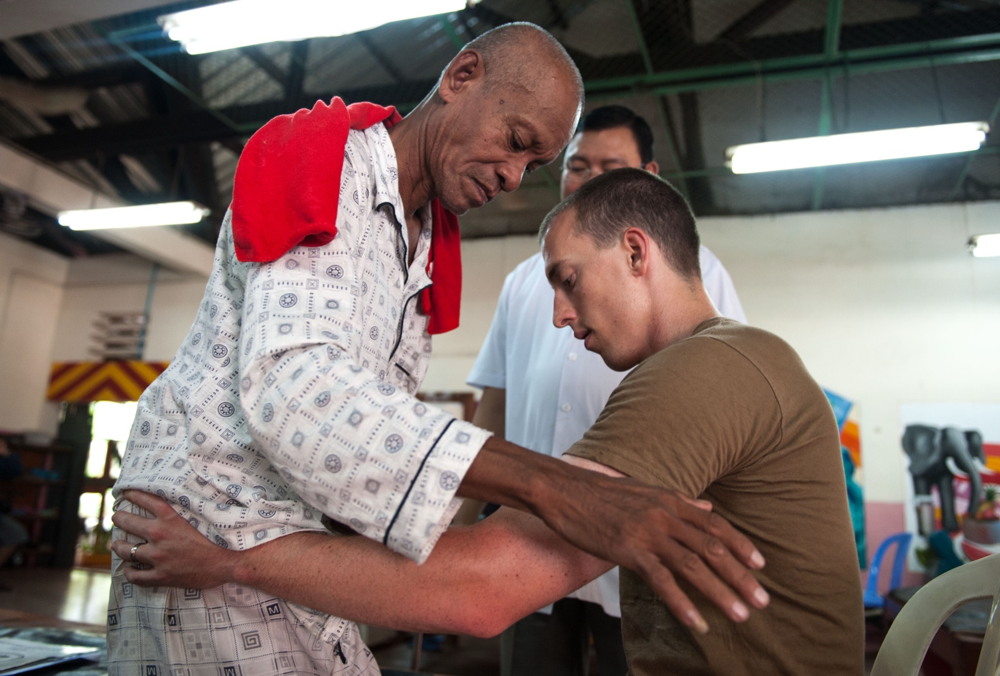

Há medicamentos que alteram a sobrevida, aumentando um pouco a sobrevida. Clássico: riluzole — droga oral (comercial Rilutek). Aumenta poucos meses a sobrevida — e, para quem tem sobrevida curta, vale muito a pena.
Dose não entra neste recorte — não inventar na prova.
Edaravone
Mais recente: edaravone. Via endovenosa (EV). Ciclos: 14 dias com (venosos) e 14 dias sem. É caro, importado, acesso restrito — nem todo mundo terá acesso. Se houver acesso, edaravone vai junto com o riluzole. Benefício também é pequeno (delta de sobrevida limitado).
Expectativa
É isso que se tem para oferecer: suporte como base + riluzole ± edaravone (ganho pequeno, mas relevante na sobrevida curta).
Chip: “delta pequeno ≠ irrelevante quando a sobrevida é de ~3 anos”.
Atenção — o texto principal mantém “importado / acesso restrito”. Em 2026 houve movimento de incorporação SUS da edaravona em estágio inicial (CONITEC); isso não apaga o quadro de acesso restrito na conduta prática.

Suporte multiprofissional — fisioterapia como base do cuidado. O chão que não é “só conforto”.
U.S. Navy photo by MC2 Karolina A. Oseguera (140623-N-JN664-174), public domain (U.S. federal government work), via Wikimedia Commons · fonte
O chão da conduta
A imagem é de suporte — fisioterapia, reabilitação — e não de frasco, porque é isto que a ELA oferece de verdade: a base larga que prolonga função e dignidade. Riluzole e edaravone são delta em cima; sem suporte, o delta se perde.
Camadas de tratamento da ELA
Pirâmide de camadas: base larga “suporte”, meio “riluzole oral”, topo estreito “edaravone EV 14/14” — anotação “delta meses”.
Quiz — fixação
Tratamento básico da ELA:
Gabarito B. Chão = suporte; fármacos são delta em cima.
(A) inverte prioridade. (C)/(D) confunde com inflamatória/GBS. Cai em D porque o raciocínio do GBS contamina a conduta.
Sobre riluzole e edaravone:
Gabarito B. Ganho de meses + vias (oral vs EV) + 14/14 + combinação.
(A) overclaim. (C)/(D) invertem vias. Cai em A porque “droga específica” vira “cura” na pressa da prova.
.jpg){kind=link}